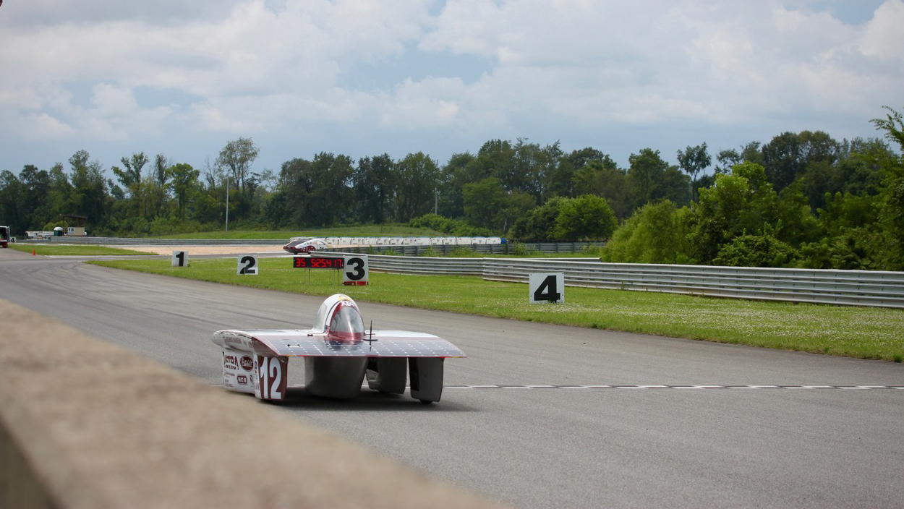
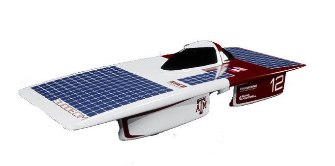
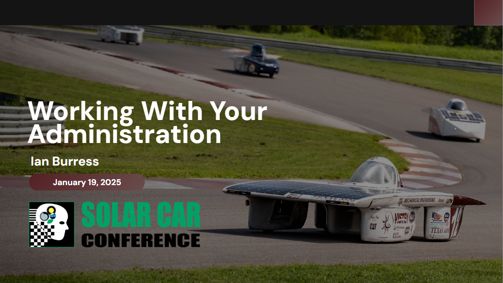

The Challenge
When I arrived at Texas A&M for graduate school, the university had no active solar car racing team. Competing in the American Solar Challenge requires a road-legal vehicle that passes strict scrutineering for safety, sizing, and dynamics, and then has to survive a multi-day cross-country event. Most programs take several years to reach that point.
My Role
- Founded the program and served as Program Director for two seasons.
- Built the organization: 14+ sub-teams spanning 12+ majors and 85+ members.
- Directed the full product development life cycle, from design through fabrication, testing, and racing.
- Represented the team to sponsors and the university; the program’s Peterbilt-supported success was featured by the Texas A&M Foundation.
Approach
I applied what I had learned leading the business side of Michigan State’s solar car team: define the competition rules as hard requirements early, structure sub-teams around vehicle systems, and hold regular design reviews so integration problems surfaced before fabrication.
To fill in: Add 2–3 specifics: how you recruited and structured the team, a key technical or schedule decision, and one major obstacle the team overcame during the event.
Results
To fill in: Your About page also mentions a “7th place finish in North America.” Confirm which event each placing refers to so the numbers line up across the site.
What I Learned
To fill in: Add 2–3 sentences on leadership lessons, such as delegating across disciplines and keeping a volunteer team motivated on a fixed competition deadline.
I continue to support the program as an alumni advisor and now serve as a Dynamics and Body & Sizing judge for the Innovators Educational Foundation.
Gallery


